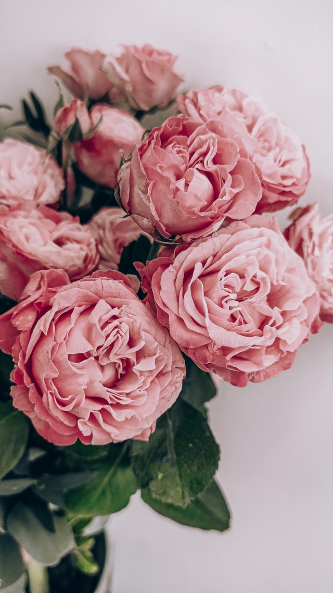
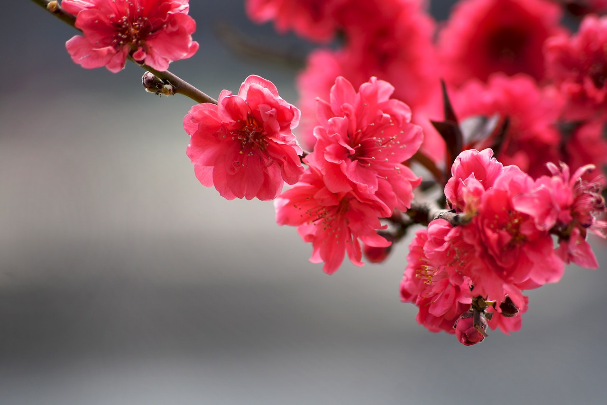
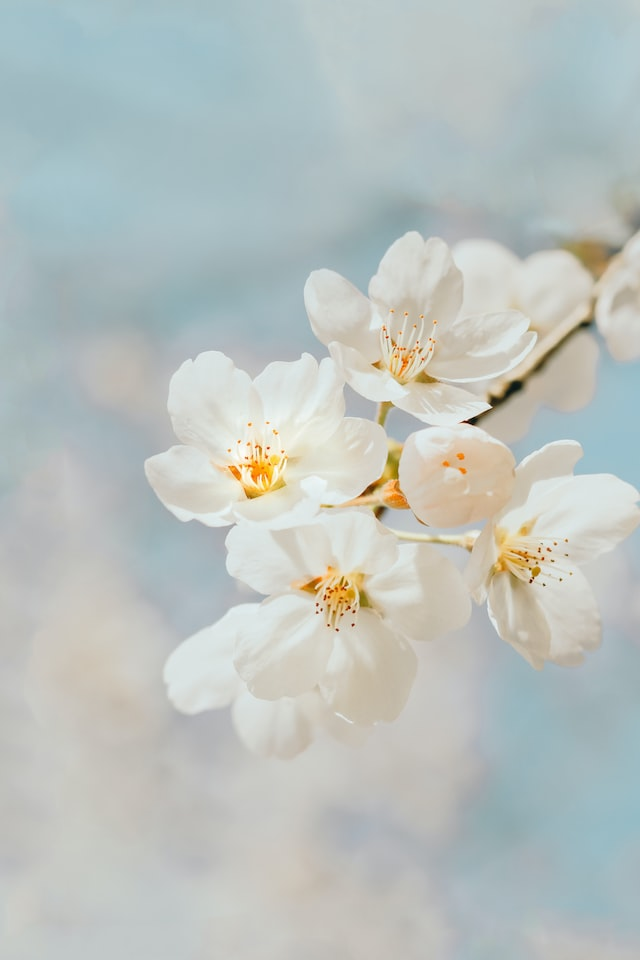
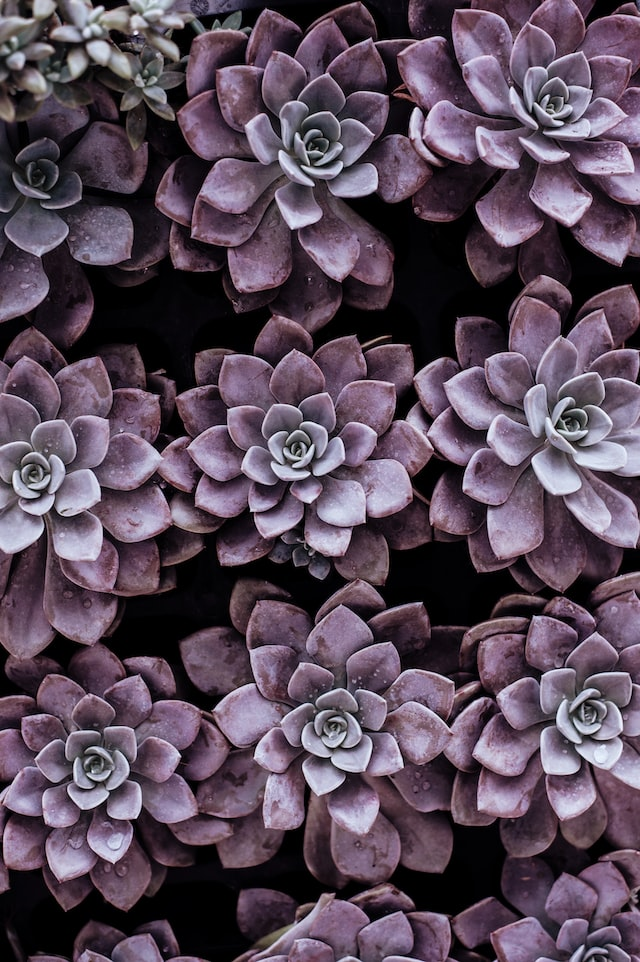
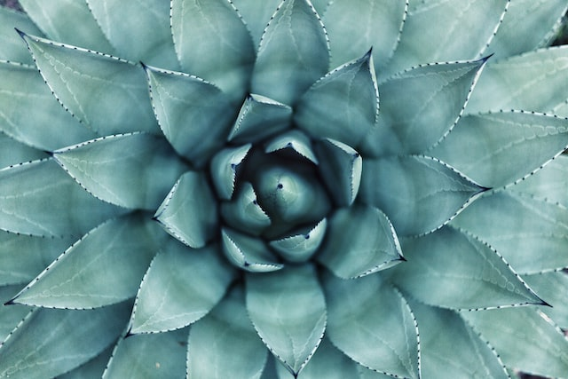
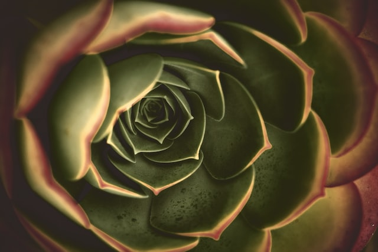
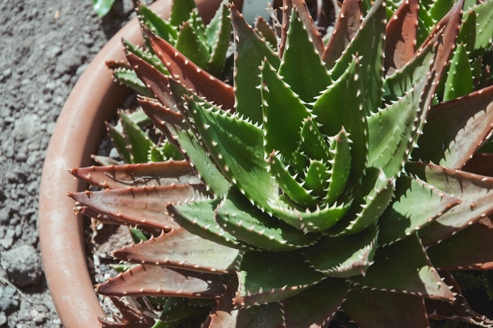
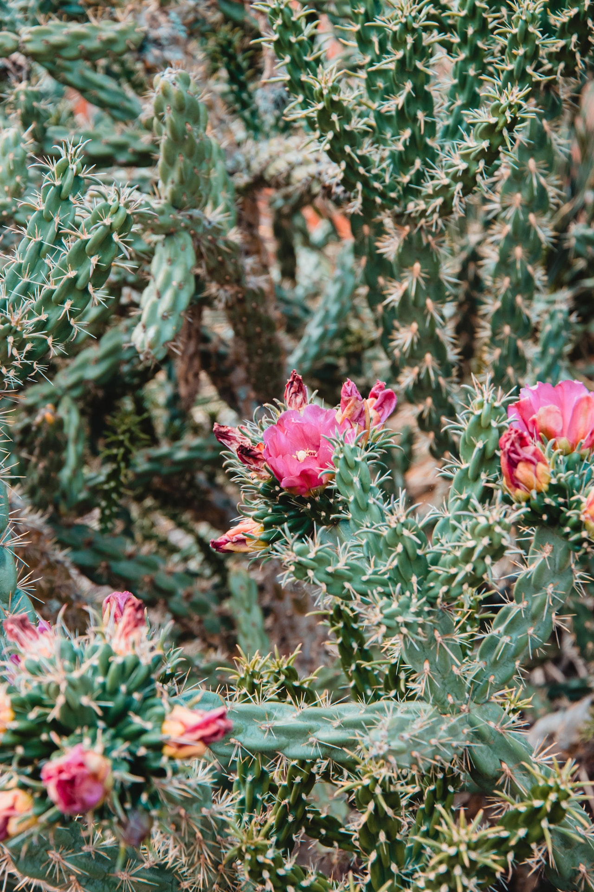

Flowers
A classic for all occasions.
Pink Flowers
Our most popular variety of plant - pink flowers are among the most recognizable of their kind. These are a popular choice for weddings.
Red Flowers
For settings that demand a more vivid colour than pink, our range of red flowers will be sure to excite.
White Flowers
Colourless, though far from boring - our white flowers match with any colour, at any time, and in any place.
Succulents
These small plants are known for their fleshy leaves, and make a great beginner plant due to how easy it is to take care of them.
Purple Succulents
Vibrant and unique, these succulents are sure to impress.
Teal Succulents
For those who want something a little more -vibrant- than green.
Green Succulents
The classic succulent look. A crowd favourite.
Cacti
Despite their prickly look, cacti can make a great desk plant. Like succulents, they're also very easy to take care of.
Pointy Cacti
A traditional cactus - suitable in every setting.
Florid Cacti
For an extra splash of -colour- in your cactus.
Smooth Cacti
A friendly cactus for beginners or newcomers to plantkeeping.